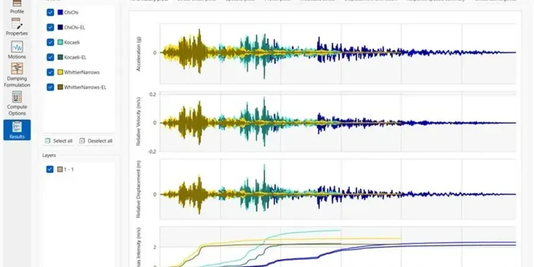

A few years back, we worked on a four-story commercial complex near Main Street in Airdrie, where the geotechnical report initially assumed a simple Site Class C. After running a full seismic amplification analysis, we found the underlying glacial till and clay till layers actually produced a Site Class D response with significantly higher spectral accelerations at short periods. That mismatch meant the original structural design would have been undersized for the actual seismic demand. Before jumping into design, it pays to first complete a georradar study to map shallow stratigraphy and then integrate those results into the amplification model. Without site-specific analysis, the NBCC 2020 code's generic amplification factors can underestimate peak ground acceleration by up to 30 percent in Airdrie's deep basin setting.

Airdrie's 2,000-meter sediment column can amplify long-period seismic waves by a factor of 2.5 or more, far exceeding NBCC 2020's default Site Class D values.
Methodology applied in Airdrie
Risks and considerations in Airdrie
The most common mistake we see in Airdrie is structural engineers adopting the NBCC default Site Class C with generic amplification curves, ignoring the actual soil column thickness. A three-story school near Yankee Valley Boulevard was designed using default factors, but the measured VS30 of 210 m/s placed it in Site Class E, requiring 40 percent higher base shear. That oversight led to a costly redesign mid-construction. Without a proper seismic amplification analysis, multi-story buildings in Airdrie risk inadequate lateral capacity during a magnitude 6.5 event on the nearby Bow Valley fault system.
Our services
Our seismic amplification analysis in Airdrie covers the full workflow from field testing to final design spectra, tailored to the local geology and NBCC requirements.
VS30 Measurement by MASW
Multichannel analysis of surface waves to determine the average shear-wave velocity in the top 30 meters, directly used for NBCC site classification and amplification factor calculation.
Site-Specific Response Spectra
One-dimensional equivalent-linear ground response analysis (using DEEPSOIL or SHAKE) to produce design spectra that reflect Airdrie's deep basin amplification rather than code defaults.
Nonlinear Soil Behavior Assessment
Evaluation of modulus reduction and damping curves for glacial till and clay till under cyclic loading, ensuring amplification factors remain realistic at high strain levels.
Seismic Microzonation Mapping
Spatial interpolation of VS30, site period, and amplification factors across large development sites to identify zones of differential shaking and inform foundation design.
Frequently asked questions
What is the typical cost range for a seismic amplification analysis in Airdrie?
For a standard commercial building site in Airdrie, the cost ranges from CA$1,240 to CA$3,260 depending on the number of MASW lines, depth of profiling, and whether nonlinear analysis is required. Larger subdivisions may cost more due to spatial coverage.
How does Airdrie's deep sedimentary basin affect seismic amplification?
Airdrie sits on the Western Canada Sedimentary Basin with over 2,000 meters of sediment. This deep basin traps and amplifies long-period seismic waves (0.6–1.2 seconds), which can increase spectral accelerations by 2.5 times or more compared to a shallow soil site. The amplification is most pronounced for buildings 8 to 15 stories tall.
What NBCC site class is most common in Airdrie?
Most of Airdrie's glacial till deposits fall into Site Class D (180–360 m/s) based on measured VS30 values. However, areas with softer clay till near the Nose Creek valley can be Site Class E (less than 180 m/s). We always recommend site-specific measurement rather than relying on the default map.
Can the seismic amplification analysis be combined with liquefaction assessment?
Yes, and we strongly recommend it for Airdrie sites where shallow groundwater exists (typically 3–6 meters depth). The amplification analysis provides the cyclic stress ratios needed for liquefaction triggering evaluation, so combining both studies avoids duplication of field work and produces a unified seismic hazard assessment.